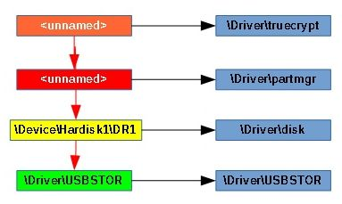
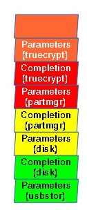

So far, you got familiar with the concepts of driver and device entities in the Windows kernel and how kernel components and user applications can communicate with each other. You know that when an application or a driver wish to communicate with another driver, it just opens one of its devices, suitable for the communication, and starts sending requests to it. But what to do when a driver needs to monitor or filter requests targeted at a device associated with another driver? Such need may be absolutely legit, for example when a disk encryption driver needs to encrypt and decrypt data passing through a disk device. Windows kernel solves this problem by introducing device stacks. The newly attached device is placed on top of the stack, the other end of the stack is called a bottom.
Figure 1 shows a sample device stack representing a disk device connected via USB. The lowest device (placed at the bottom) belongs to USBSTOR driver and represents an USB Mass Storage device connected to the computer (such as flash drive). A disk device is attached above it, translating disk commands to the USB Mass Storage language. Partition Manager attaches its device over the disk one and translates requests targeted at individual partitions to direct disk access. TrueCrypt places its device object on the top of the stack and encrypts or decrypts data within read and write requests as necessary.

Figure 1: Example of a device stack: disk device stack
Rather than sending a request to particular device object, the kernel finds the top device in target's device stack and passes the request to it. Each driver in the stack (with an exception of the one handling the bottom device) should pass the request to the next lower driver in the stack, if it does not handle the request. So, requests arrive at the top of the stack and travel to the bottom until one of the drivers decide to handle them (complete them).
When processing a request, a driver can register a completion routine – a callback routine that is invoked when the request is complete. Each driver in a device stack, except the one at the bottom, can register a completion routine. The registered routines are invoked in the order opposite to the order processing the request before completion. So, the completion notification travels from bottom to the top of the device stack.
Device stack are also supported by the structure of I/O request packets. When allocating a new packet, the kernel determines the size (in device objects) of a device stack containing the target device and allocates number of stack locations as part of the request. The count of allocated stack locations is greater or equal to the size of the stack. The I/O request packet has a counter that indicates which of the stack locations is the current one at the moment.
Figure 2 shows stack locations allocated for a request sent to the device stack on Figure 1. In simple terms, a stack location consists of two parts: request data and completion information, such as address of the completion routine, provided by the nearest higher driver. This means, there is no place for storing the completion routine registered by the bottom driver. However, the bottom driver must handle the request in some way, so it needs not to register a completion routine for it. Although, it can create a new I/O request, register a completion routine for it, send it to another device stack and complete the old request inside the completion routine.

Figure 2: Stack locations of a request
When processing a request, the driver, when it decides to pass the request down the device stack, should do the following:
A driver passes the request to the next lower driver in the stack by marking the next stack location as current and invoking corresponding callback routine of the target driver. All this work is done by the IoCallDriver routine.